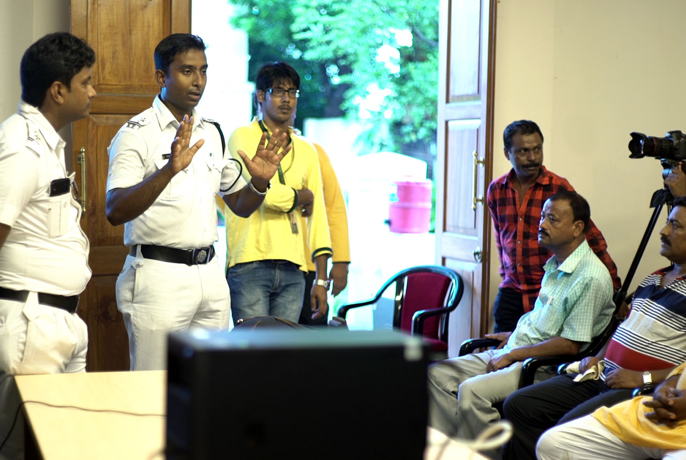
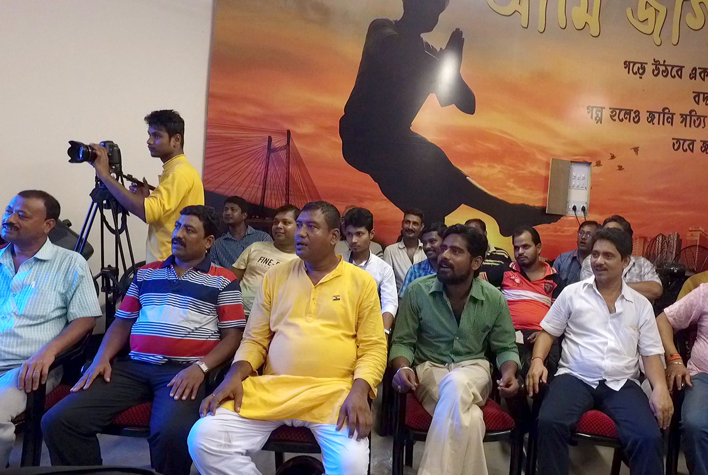
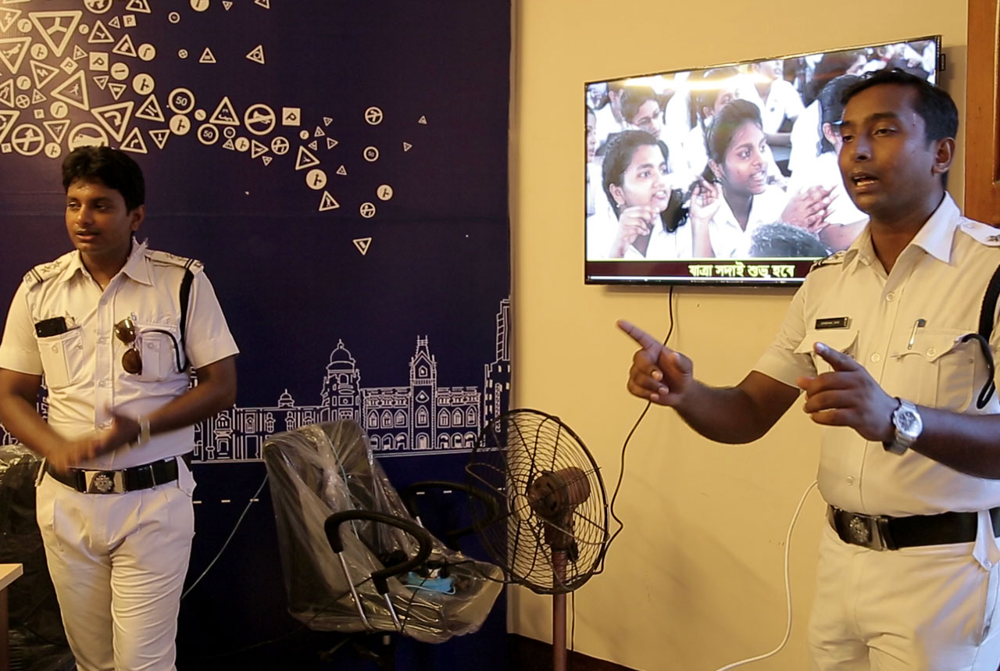
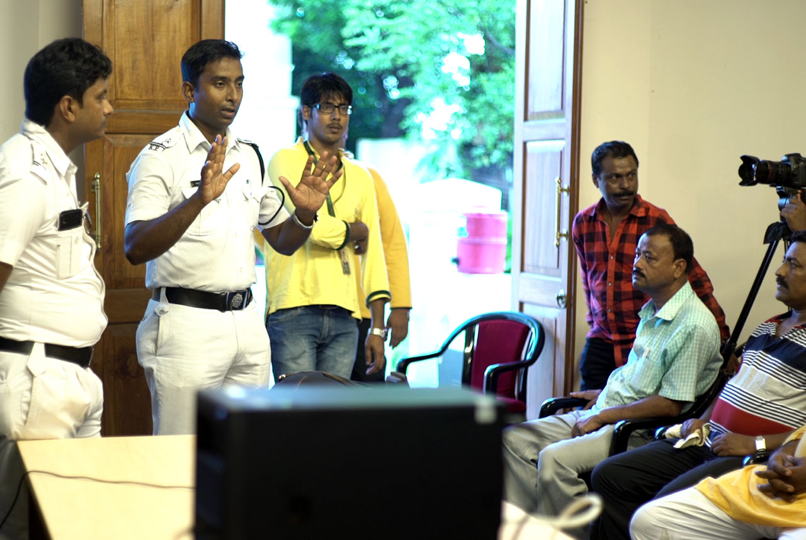
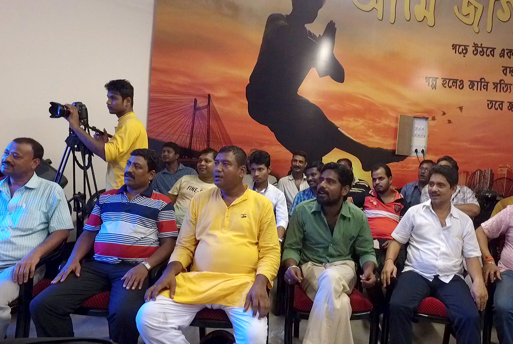
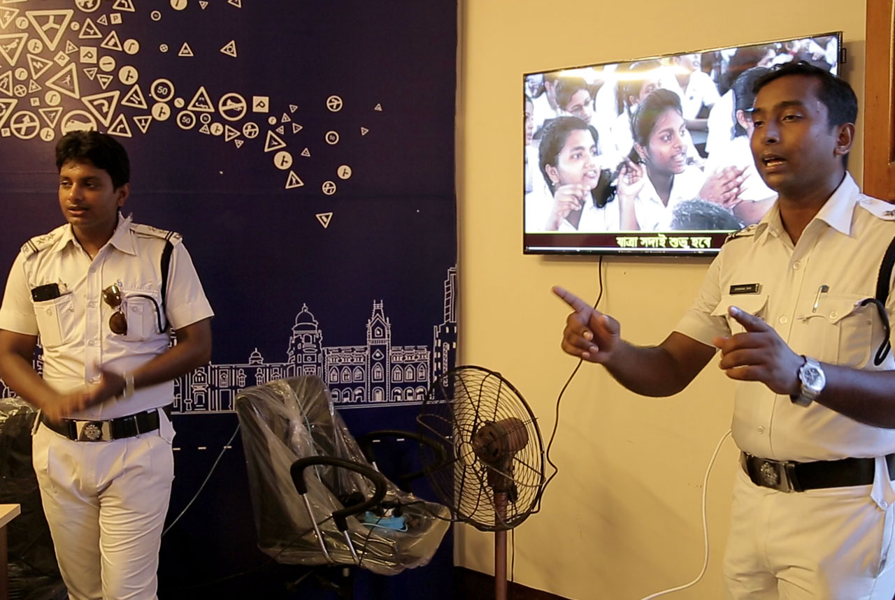

JAAAGO Learning Clubs
25 Traffic Guards across Kolkata have been converted into JAAAGO learning clubs with state of the infrastrure and digital equipements. These learning clubs are currently running OmniDELTM learning programs for drivers conducted by police officials especially trained by KarmYog as OmniDELTM facilitators.